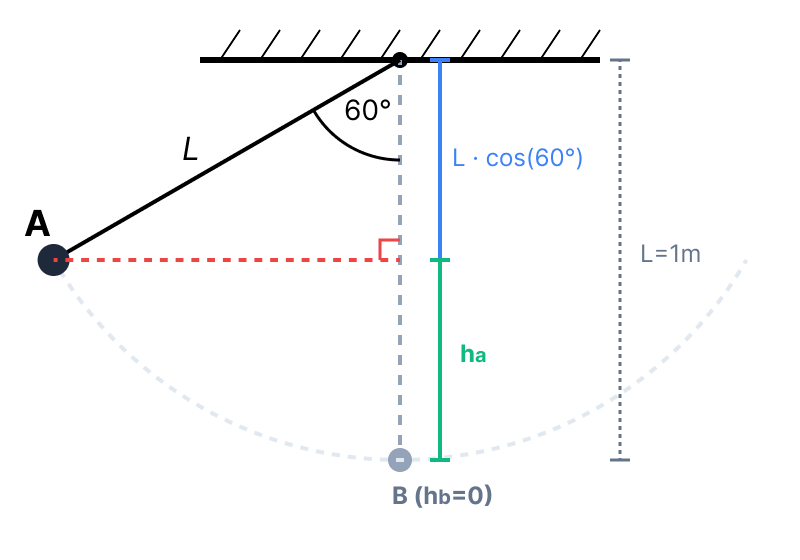
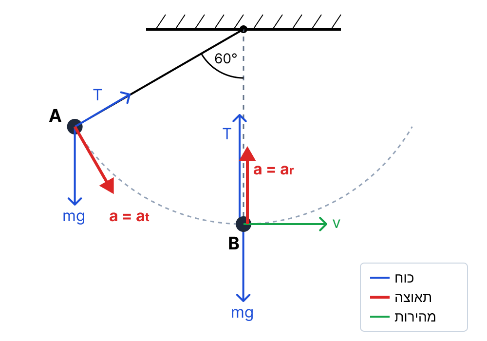
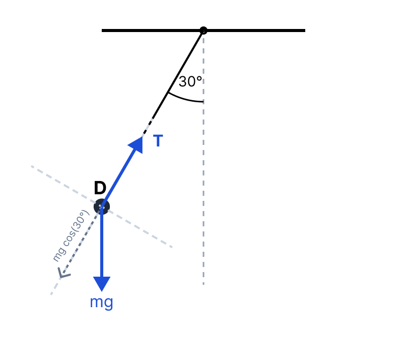

סעיף א': מהירות המשקולת בנקודה הנמוכה ביותר
אורך החוט הוא \( l = 1\text{ m} \). הזווית המקסימלית עם האנך היא \( \theta_{max} = 60^\circ \). מסת המשקולת היא \( m = 100\text{ gr} \).
נתון עקיף חשוב: מכיוון שזוהי הזווית המקסימלית (נקודת הקיצון של התנועה), המשקולת נעצרת שם רגעית, ולכן גודל מהירותה בנקודה זו שווה לאפס (\( v_A = 0 \)).
שלב 0 - המרת יחידות (MKS): נמיר את המסה לקילוגרמים: \( m = \frac{100}{1000} = 0.1\text{ kg} \). בנוסף נגדיר את תאוצת הנפילה החופשית המקובלת \( g = 10\text{ m/s}^2 \).
נגדיר את רמת הייחוס לאנרגיה כובדית (\( h=0 \)) בנקודה הנמוכה ביותר של המסלול (נקודה B).
את גודל מהירות המשקולת בנקודה B, נסמן כ- \( v_B \).
\( E_k = \frac{1}{2}mv^2 \) \( U_G = mgh \) חוק שימור אנרגיה מכנית: כיוון שפועלים רק כוח הכובד (משמר) וכוח המתיחות (שאינו מבצע עבודה), האנרגיה המכנית נשמרת \( E_A = E_B \).
✍️ ד. הצבה ופתרון:
תחילה, נחשב את הגובה ההתחלתי \( h_A \) בנקודה A ביחס לנקודה B. מתוך גיאומטריה של משולש ישר זווית הנוצר עם האנך לתקרה:

כעת, נרשום את חוק שימור האנרגיה בין נקודה A (שבה המשקולת במנוחה רגעית, \( v_A=0 \)) לנקודה B:
\[ E_A = E_B \] \[ U_{G(A)} + E_{k(A)} = U_{G(B)} + E_{k(B)} \] \[ mgh_A + 0 = 0 + \frac{1}{2}mv_B^2 \]נצמצם את המסה \( m \) (שהיא שונה מאפס) משני אגפי המשוואה ונבודד את המהירות:
\[ gh_A = \frac{1}{2}v_B^2 \implies v_B = \sqrt{2gh_A} \] \[ v_B = \sqrt{2 \cdot 10 \cdot 0.5} = \sqrt{10} \approx 3.16\text{ m/s} \]סעיף ב': תפקיד הרכיבים של הכוח השקול
הכוח השקול מפורק לשני רכיבים: רכיב רדיאלי (בכיוון הרדיוס/החוט) ורכיב משיקי (משיק למסלול התנועה).
איזה מן הרכיבים גורם לשינוי בגודל המהירות, ואיזה רכיב גורם לשינוי בכיוון המהירות.
\( \Sigma\vec{F} = m\vec{a} \) \( a_R = \frac{v^2}{r} \) על פי החוק השני של ניוטון, כיוון התאוצה הוא ככיוון הכוח השקול. כוח שפועל במאונך לוקטור המהירות משנה רק את כיוונו, וכוח שפועל במקביל לוקטור המהירות משנה את גודלו.
✍️ ד. הצבה ופתרון:
על פי קינמטיקה של תנועה מעגלית לא קצובה:
- הרכיב הרדיאלי (\( \Sigma F_R \)): פועל במאונך לוקטור המהירות המשיקית. לכן הוא אינו יכול לבצע עבודה ולשנות את האנרגיה הקינטית (גודל המהירות). תפקידו הוא למשוך את הגוף למרכז הסיבוב ובכך לגרום לשינוי בכיוון המהירות של המשקולת.
- הרכיב המשיקי (\( \Sigma F_T \)): פועל לאורך ציר התנועה הרגעי (מקביל או אנטי-מקביל לוקטור המהירות). כוח זה מבצע עבודה וגורם לתאוצה משיקית (\( a_T = \frac{dv}{dt} \)), ולכן הוא גורם לשינוי בגודל המהירות.
הרכיב הרדיאלי גורם לשינוי בכיוון המהירות.
סעיף ג': כיוון התאוצה בעזרת שושנת הכיוונים
המשקולת משוחררת ממנוחה בנקודה A ונועה ימינה. מוצגת שושנת כיוונים עם 8 חצים. הזווית בין חץ 7 (אופקי שמאלה) לחץ 8 (אלכסון מעלה) היא \( 60^\circ \).
את מספר החץ המייצג את כיוון התאוצה הכוללת: (1) בנקודה A. (2) בנקודה B.
וקטור התאוצה הכוללת הוא סכום וקטורי של התאוצה הרדיאלית והתאוצה המשיקית: \( \vec{a} = \vec{a}_R + \vec{a}_T \). כיוונו ככיוון הכוח השקול.
✍️ ד. הצבה ופתרון:

1) ניתוח בנקודה A:
בנקודה A, המשקולת נמצאת במנוחה רגעית, ולכן גודל מהירותה הוא אפס (\( v_A = 0 \)). מכאן נובע שהתאוצה הרדיאלית שווה לאפס: \( a_R = \frac{v_A^2}{l} = 0 \).
התאוצה היחידה שפועלת היא התאוצה המשיקית (\( a_T \)). כיוון המשיק מאונך לחוט.
מכיוון שהחוט יוצר זווית של \( 60^\circ \) עם האנך, הוא יוצר זווית של \( 30^\circ \) עם האופק. המשיק (המאונך לו) ייצור זווית של \( 90^\circ - 30^\circ = 60^\circ \) עם האופק. מכיוון שהגוף מתחיל לנוע מטה וימינה, התאוצה מצביעה מטה וימינה בזווית של \( 60^\circ \) מתחת לאופק.
בשושנת הכיוונים, חץ 3 מייצג את האופק ימינה. מכיוון שחץ 2 ממוקם בסימטריה (על פי הנתון על חץ 8) ב-\( 60^\circ \) מעל האופק, אזי חץ 4, שנמצא סימטרית למטה, מייצג זווית של \( 60^\circ \) מתחת לאופק.
לכן כיוון התאוצה זהה לכיוון חץ מספר 4.
2) ניתוח בנקודה B:
בנקודה הנמוכה ביותר B, כל הכוחות הפועלים על המשקולת (כוח הכובד מטה וכוח המתיחות מעלה) הם אנכיים בלבד. מכיוון שהציר המשיקי בנקודה זו הוא אופקי לחלוטין, אין שום רכיב כוח שפועל בכיוון המשיק למסלול (\( \Sigma F_T = 0 \)). לכן, על פי החוק השני של ניוטון, התאוצה המשיקית מתאפסת (\( a_T = 0 \)).
התאוצה היחידה שקיימת היא התאוצה הרדיאלית המכוונת למרכז מעגל הסיבוב, כלומר למעלה (לכיוון התקרה).
בשושנת הכיוונים, חץ הפונה ישירות מעלה הוא חץ מספר 1.
(2) בנקודה B התאוצה בכיוון: חץ 1.
סעיף ד': גודל התאוצה בנקודות A ו-B
כל הנתונים מהסעיפים הקודמים נכונים גם כאן. זכרו כי בנקודה A: \( v_A = 0 \) ובנקודה B מצאנו \( v_B = \sqrt{10}\text{ m/s} \). אורך החוט \( l = 1\text{ m} \).
לחשב את גודל התאוצה הכוללת (השקולה) בנקודה A ובנקודה B.
\( a = \sqrt{a_R^2 + a_T^2} \) \( \Sigma F_T = m a_T \implies a_T = g\sin\theta \) \( a_R = \frac{v^2}{l} \)
✍️ ד. הצבה ופתרון:
1) גודל התאוצה בנקודה A:
ראינו ש-\( a_R = 0 \). הכוח המשיקי היחיד הפועל הוא רכיב כוח הכובד לאורך המשיק (כוח המתיחות פועל רק בציר הרדיאלי ולא תורם לציר המשיקי):
נצמצם את המסה ונציב \( g=10 \):
\[ a_A = a_T = g \sin(60^\circ) = 10 \cdot \frac{\sqrt{3}}{2} = 5\sqrt{3} \approx 8.66\text{ m/s}^2 \]2) גודל התאוצה בנקודה B:
כפי שהוסבר, \( a_T = 0 \), ולכן התאוצה היא רדיאלית בלבד. נציב את גודל המהירות שמצאנו בסעיף א':
(2) גודל התאוצה בנקודה B הוא: \( a_B = 10\text{ m/s}^2 \)
סעיף ה': מתיחות החוט בזווית של 30 מעלות
המשקולת נמצאת בזווית \( \theta = 30^\circ \) עם האנך. נקרא לנקודה זו נקודה D. אנו משתמשים בכל הנתונים הקודמים, כולל \( m = 0.1\text{ kg} \).
את כוח המתיחות המופעל על ידי החוט, אותו נסמן באות \( T \).
\( \Sigma F_R = m a_R \) \( a_R = \frac{v^2}{l} \) חוק שימור אנרגיה למציאת המהירות: \( E_A = E_D \).
✍️ ד. הצבה ופתרון:

כדי למצוא את המתיחות, עלינו לדעת את גודל המהירות (\( v_D \)) בנקודה זו. נחשב תחילה את הגובה \( h_D \) ביחס לנקודה התחתונה B:
\[ h_D = l - l\cos(30^\circ) = 1 \cdot \left(1 - \frac{\sqrt{3}}{2}\right) \approx 0.134\text{ m} \]נשתמש בחוק שימור האנרגיה בין נקודה A לנקודה D. האנרגיה בנקודה A ידועה לנו: \( E_A = mgh_A = 0.1 \cdot 10 \cdot 0.5 = 0.5\text{ J} \).
\[ E_A = E_D = U_{G(D)} + E_{k(D)} \] \[ 0.5 = mgh_D + \frac{1}{2}mv_D^2 \] \[ 0.5 = 0.1 \cdot 10 \cdot \left(1 - \frac{\sqrt{3}}{2}\right) + \frac{1}{2} \cdot 0.1 \cdot v_D^2 \] \[ 0.5 = 1 - \frac{\sqrt{3}}{2} + 0.05v_D^2 \]נעביר אגפים ונבודד את \( v_D^2 \):
\[ 0.05v_D^2 = 0.5 - 1 + \frac{\sqrt{3}}{2} = \frac{\sqrt{3}}{2} - 0.5 \] \[ v_D^2 = \frac{\frac{\sqrt{3}}{2} - 0.5}{0.05} = 20\left(\frac{\sqrt{3}}{2} - 0.5\right) = 10\sqrt{3} - 10 \approx 7.32\text{ (m/s)}^2 \]כעת נרשום את משוואת הכוחות בציר הרדיאלי (נקבע את הכיוון למרכז המעגל כחיובי, מכיוון שזוהי התאוצה הרדיאלית \( a_R \)):
\[ \Sigma F_R = m a_R \]הכוחות בציר הרדיאלי הם: מתיחות \( T \) פנימה, ורכיב משקל \( mg\cos(30^\circ) \) החוצה:
\[ T - mg\cos(30^\circ) = m \frac{v_D^2}{l} \]נבודד את \( T \) ונציב את הערכים שחישבנו:
\[ T = mg\cos(30^\circ) + m \frac{v_D^2}{l} \] \[ T = 0.1 \cdot 10 \cdot \frac{\sqrt{3}}{2} + 0.1 \cdot \frac{10\sqrt{3} - 10}{1} \] \[ T = \frac{\sqrt{3}}{2} + \sqrt{3} - 1 = 1.5\sqrt{3} - 1 \approx 1.598\text{ N} \]סעיף ו': העבודה שמבצע כוח המתיחות
המשקולת נעה במסלול קשתי מנקודה A לנקודה B תחת השפעת כוח הכובד וכוח המתיחות מהחוט.
את ערך העבודה שעושה כוח המתיחות בחוט במהלך התנועה מ-A ל-B, בתוספת נימוק.
\( W = F \cdot \Delta x \cdot \cos\alpha \) (או בניסוח אינפיניטסימלי: \( W = \int \vec{F} \cdot d\vec{r} \))
עבודה של כוח המאונך לכיוון התנועה שווה לאפס.
✍️ ד. הצבה ופתרון:
לאורך כל מהלך תנועת המשקולת, כוח המתיחות בחוט (\( T \)) פועל לאורך החוט (בציר הרדיאלי), כלומר במאונך למסלול התנועה הרגעי (הציר המשיקי, שהוא כיוון וקטור המהירות).
מכיוון שהזווית בין כוח המתיחות לבין וקטור ההעתק הרגעי היא זווית ישרה (\( 90^\circ \)), והקוסינוס של הזווית הזו מתאפס (\( \cos(90^\circ) = 0 \)), העבודה הכוללת שמבצע הכוח היא אפס.
נימוק: הכוח פועל בניצב לכיוון התנועה (ההעתק) בכל רגע ורגע.